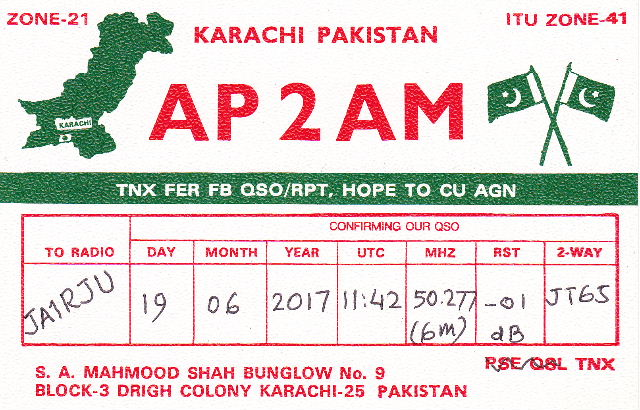
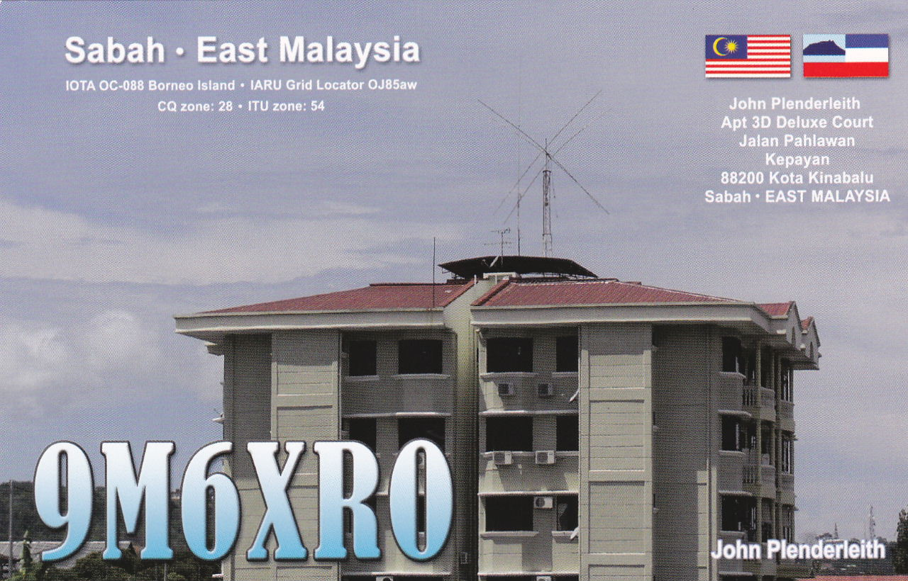
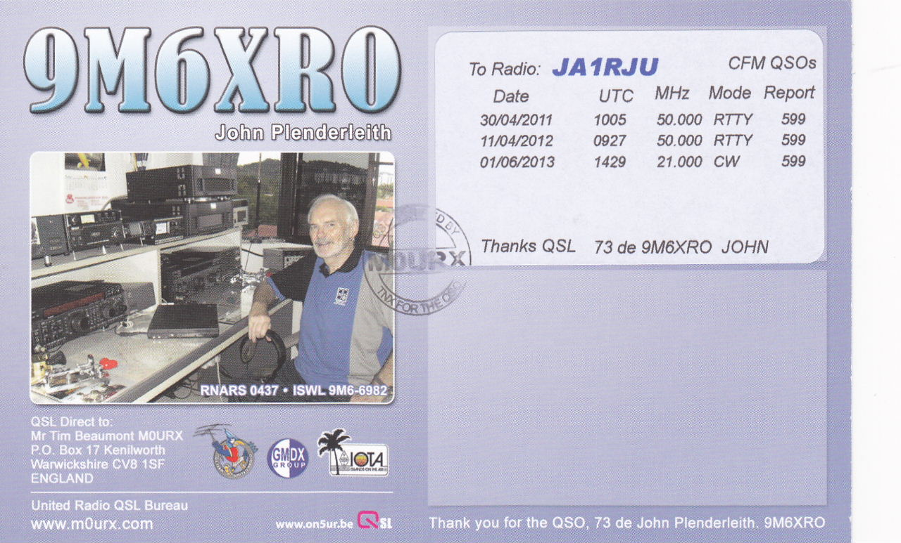

Flash ! DX


 

|
|
|
|

|
|
|
[Back Issues Dec.2017]
TIME:UTC(JST-09:00)
Report from JA1RJU(PM95sq)
31.Dec.2017(15:00c)
5W1SA 03:2115 50.313-1940 WSJT FT8 -14dB into JA1
5W1SA 03:2227- 50.313-1940 WSJT FT8 -12dB QSO with JA1
5W1SA 03:2330- 50.313-1940 WSJT FT8 -12dB QSO with JA2
5W1SA 03:2345- 50.313-1940 WSJT FT8 -17dB into JA1
5W1SA 03:2700- 50.313-1940 WSJT FT8 -15dB QSO with JA1
5W1SA 03:2830- 50.313-1940 WSJT FT8 -12dB CQ 5W1SA AH46
5W1SA 03:3400- 50.313-1941 WSJT FT8 -15dB CQ AS 5W1SA AH46
5W1SA 03:3800- 50.313-1940 WSJT FT8 -16dB QSO with JA3
5W1SA 03:4500- 50.313-1940 WSJT FT8 -15dB CQ AS 5W1SA AH46
◎今日は午後から短時間ながら、50.313MHｚの”FT8”で5W1SAの入感があった。入感しているエリアは狭く、数キロは離れただけで”聞こえない”状態となるなどコンデションはスポット的なもので、東京西部(PM95)での信号強度はピークで-12dBだった。
東京都心では今年初めての降雪が認められ、気象庁から平年よりも3日早い"初雪"と発表された。
Report from JA1RJU(PM95sq)
30.Dec.2017(15:00b)
Report from JA1RJU(PM95sq)
29.Dec.2017(15:00b)
◎南半球の季節は今が夏。Esシーズンの真っ盛りの6mでは、VK本土から南米(CX、LU、ZP)とのQSOも盛んにリポートされている。今日はVKから3D2AG、H44DAなどとのQSOがクラスターを賑わしていた。暮れも押し詰まった"真冬"の日本国内では、海外DXの入感は20日以降にはリポートされていない。
そんな中、今日の午後からJA1(PM95)でJA5/6などの西日本が50.313MHｚの”FT8”で強力に入感していた。西日本と同時にJA7/8の信号も入感、久しぶりにローカル以外の信号が多数デコードされていた。
Report from JA1RJU(PM95sq)
28.Dec.2017(15:00b)
Report from JA1RJU(PM95sq)
27.Dec.2017(15:00b)
Report from JA1RJU(PM95sq)
26.Dec.2017(15:00b)
Report from JA1RJU(PM95sq)
25.Dec.2017(15:00b)
Report from JA1RJU(PM95sq)
24.Dec.2017(15:00b)
Report from JA1RJU(PM95sq)
23.Dec.2017(15:00b)
Report from JA1RJU(PM95sq)
22.Dec.2017(15:00b)
Report from JA1RJU(PM95sq)
21.Dec.2017(15:00b)
Report from JA1RJU(PM95sq)
20.Dec.2017(15:00b)
Report from JA1RJU(PM95sq)
19.Dec.2017(15:00b)
Report from JA1RJU(PM95sq)
18.Dec.2017(15:00c)
VK4WTN 04:0615- 50.313-1161 WSJT FT8 -14dB CQ DX(QG64)
VK4UH 04:0645- 50.313-1536 WSJT FT8 -15dB CQ(QG62)
VK4UH 04:0815- 50.313-1536 WSJT FT8 -18dB CQ
VK4UH 04:1145- 50.313-1537 WSJT FT8 -18dB CQ
Report from JA1RJU(PM95sq)
17.Dec.2017(15:00b)
Report from JA1RJU(PM95sq)
16.Dec.2017(15:00b)
Report from JA1RJU(PM95sq)
15.Dec.2017(15:00b)
Report from JA1RJU(PM95sq)
14.Dec.2017(15:00b)
Report from JA1RJU(PM95sq)
13.Dec.2017(15:00b)
Report from JA1RJU(PM95sq)
12.Dec.2017(15:00b)
Report from JA1RJU(PM95sq)
11.Dec.2017(15:00b)
Report from JA1RJU(PM95sq)
10.Dec.2017(15:00b)
Report from JA1RJU(PM95sq)
09.Dec.2017(15:00c)
VK4WTN 04:3430- 50.313-1777 WSJT FT8 -17dB QSO with JA2
VK4WTN 04:4200- 50.313-1052 WSJT FT8 -17dB CQ JA
VK4WTN 04:4230- 50.313-1051 WSJT FT8 -17dB CQ JA
VK4WTN 04:4330- 50.313-1053 WSJT FT8 -18dB CQ JA
VK4WTN 04:4430- 50.313-1052 WSJT FT8 -17dB QSO with JA3
VK4WTN 04:4630- 50.313-1051 WSJT FT8 -15dB CQ JA
VK4WTN 04:4730- 50.313-794 WSJT FT8 -17dB QSO with JA1
Report from JA1RJU(PM95sq)
08.Dec.2017(15:00c)
VK6KXW 06:10 50.276-971 WSJT JT65a -21dB CQ DX(OF87)
Report from JA1RJU(PM95sq)
07.Dec.2017(15:00b)
Report from JA1RJU(PM95sq)
06.Dec.2017(15:00c)
●9M6XRO John SK (2017/12/04)
2005年から東マレーシアのコタキナバルから6mでアクティブにQRVして多くのJA局にお馴染みだった9M6XRO・Johnが12月4日にSK(死去)した。
この情報は、以前にコタキナバルから9M6DXXでQRVしていて、現在はPJ4DXからアクティブにQRVしているSteveから連絡が有ったもの。
JohnはGM3OOK/G3OOKでもアクティブだったが、2005年から東マレーシアにQSYしていた。9M6CTが英国にQSYした後、彼が住んでいたコタキナバルのマンションの一室をアンテナ付きで譲り受けアクティブにQRVしていた。Johnのご冥福をお祈りします。


Sorry to bring you the sad news that John Plenderleith 9M6XRO became a
silent key yesterday. He had been battling cancer for several years.
John was also GM3OOK and G3OOK before settling in East Malaysia in
2005 and was a member of CDXC and the GM-DX Group.
RIP John. 73 Steve, PJ4DX (ex-9M6DXX)
Report from JA1RJU(PM95sq)
05.Dec.2017(15:00b)
Report from JA1RJU(PM95sq)
04.Dec.2017(18:00c)
OH3SR 15:20 50.189 WSJT JT65a -21dB(EME) into JA2
S59A 17:37 50.189 WSJT JT65a -21dB(EME) into JA2
Report from JA1RJU(PM95sq)
03.Dec.2017(15:00c)
VK5PJ 10:24 50.193 WSJT JT65a -29dB(EME) into JA2
K6EME 13:53 50.195 WSJT JT65a -25dB(EME) into JA2
Report from JA1RJU(PM95sq)
02.Dec.2017(15:00b)
Report from JA1RJU(PM95sq)
01.Dec.2017(15:00b)